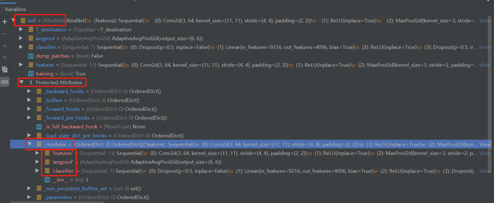
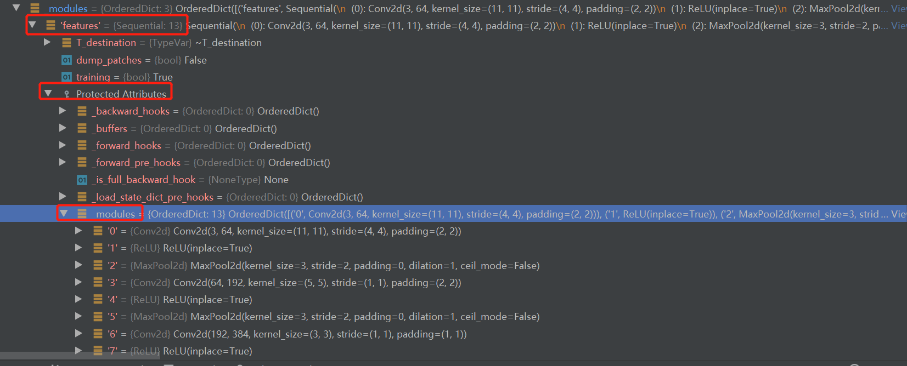

4.2 Module容器——Containers
容器的概念出现在日常生活的方方面面，每天喝水的杯子用来装一些水，书包用来装一些办公用品，衣柜用来装一些衣服。因此，我们可以很容易地抽象出容器的概念，它用于将一些物品放置在某个地方，并进行有效的管理和使用。
在深度学习模型里面，有一些网络层需要放在一起使用，如 conv + bn + relu 的组合。Module的容器是将一组操作捆绑在一起的工具，在pytorch官方文档中把Module也定义为Containers，或许是因为“Modules can also contain other Modules”。
对于Module类可查看4.1小结，这里详细介绍两个常用的容器Sequential与ModuleList，同时介绍ModuleDict，ParameterList，ParameterDict。
Sequential
sequential是pytorch里使用最广泛的容器，它的作用是将一系列网络层按固定的先后顺序串起来，当成一个整体，调用时数据从第一个层按顺序执行到最后一个层。回顾一下transforms的Compose就可以体会到按顺序的含义了。
sequential可以直接传module，也可以传OrderedDict，OrderedDict可以让容器里的每个module都有名字，方便调用。
请看两段官方代码：
model = nn.Sequential(
nn.Conv2d(1,20,5),
nn.ReLU(),
nn.Conv2d(20,64,5),
nn.ReLU()
)
# Using Sequential with OrderedDict. This is functionally the
# same as the above code
model = nn.Sequential(OrderedDict([
('conv1', nn.Conv2d(1,20,5)),
('relu1', nn.ReLU()),
('conv2', nn.Conv2d(20,64,5)),
('relu2', nn.ReLU())
]))
来看一个实际案例：
AlexNet是新一代CNN的开山之作，也是这一轮深度学习潮流里，计算机视觉任务的开山之作。对于现代CNN，通常会把前面的卷积层、池化层称为特征提取部分，最后的全连接层当作分类器，这一点在代码编写上将有所体现。
例如，在D:\Anaconda_data\envs\pytorch_1.10_gpu\Lib\site-packages\torchvision\models\alexnet.py 下的AlexNet，它把前面的卷积和池化都放到Sequential这个容器当中，并且命名为self.features。在最后还有一个名为self.classifier的Sequential容器，它包含3个Linear层及激活函数、Dropout。这里正如下图所示，把模型大卸两块。
def forward(self, x: torch.Tensor) -> torch.Tensor:
x = self.features(x)
x = self.avgpool(x)
x = torch.flatten(x, 1)
x = self.classifier(x)
return x

Sequential的调用
Sequential容器把一堆module包起来之后，它在forward中是如何使用的呢？ 下面请看配套代码，主要采用debug模式，观察Alexnet的forward中，两个Sequential容器是如何forward的，同时也要看看Alexnet这个模型的属性。
在 output = model(fake_input) 设置断点，step into，然后进入熟悉的_call_impl，关于module内部的代码这里直接略过，不熟悉的朋友请回到4.1小节阅读。
这里直接跳到Alexnet类的forward函数，第一行就是执行x = self.features(x)，继续step into观察这个sequential容器是如何工作的，进入它
来到了Module类下的_call_impl函数：没错，又来到了_call_impl，因为sequential它也是一个module，因此在调用self.features的时候，会进入_call_impl， 下面需要大家有耐心的进入self.features的forward函数，其实就是1102行进去；
来到Sequential类的forward函数，它十分简洁，如下所示：
def forward(self, input):
for module in self:
input = module(input)
return input
这段代码是不是十分的熟悉呢？ transforms当中也是这样去实现一个Compose里的变换的。
从此处可知道，Sequential类的功能是将一系列网络层按固定的先后顺序串起来，当成一个整体，调用时数据从第一个层按顺序执行到最后一个层，各层之间的数据必须能对接起来。
接着回到 Alexnet的forward函数下，观察一下Alexnet这个module的属性

重点看_modules属性，它有3个key-value，其中有2个是Sequential类，因为Sequential属于module类，继续展开一个Sequential来看看

可以看到该容器下的一系列网络层，并且是排了序的，这些对于后续理解网络结构、理解网络权重加载的key是十分重要的
ModuleList
ModuleList 是将各个网络层放到一个“列表”中，便于迭代的形式调用。
ModuleList与python List的区别
这里注意是“列表”而不是列表，因为ModuleList管理的module与python的List管理的module是有不同的，大家是否还记得module的setattr函数？在那里会对类属性进行判断管理，只有ModuleList里的网络层才会被管理，如果是List里的网络层则不会被管理，也就不能迭代更新了。
ModuleList 使用示例
假设要构建一个10层的全连接网络，如果用Sequential，那就要手写10行nn.Linear，而用ModuleList是这样的：
class MyModule(nn.Module):
def __init__(self):
super(MyModule, self).__init__()
self.linears = nn.ModuleList([nn.Linear(10, 10) for i in range(10)])
# self.linears = [nn.Linear(10, 10) for i in range(10)] # 观察model._modules，将会是空的
def forward(self, x):
for sub_layer in self.linears:
x = sub_layer(x)
return x
需要对python的 list进行一个ModuleList封装，这样才可以在model的_modules属性下看到创建的10个Linear层。
推荐大家看看class ModuleList(Module)的实现，里边并不会像Sequential那样提供forward，即管理的网络层由用户自行调用，可以for循环全用，也可以通过if判断，有条件的选择部分网络层使用。同时ModuleList也提供了类似List的方法，insert\append\extend等。
ModuleDict
ModuleList可以像python的List一样管理各个module，但对于索引而言有一些不方便，因为它没有名字，需要记住是第几个元素才能定位到指定的层，这在深度神经网络中有一点不方便。
而ModuleDict就是可以像python的Dict一样为每个层赋予名字，可以根据网络层的名字进行选择性的调用网络层。
请看代码
class MyModule2(nn.Module):
def __init__(self):
super(MyModule2, self).__init__()
self.choices = nn.ModuleDict({
'conv': nn.Conv2d(3, 16, 5),
'pool': nn.MaxPool2d(3)
})
self.activations = nn.ModuleDict({
'lrelu': nn.LeakyReLU(),
'prelu': nn.PReLU()
})
def forward(self, x, choice, act):
x = self.choices[choice](x)
x = self.activations[act](x)
return x
ParameterList & ParameterDict
除了Module有容器，Parameter也有容器。与ModuleList和ModuleDict类似的，Paramter也有List和Dict，使用方法一样，这里就不详细展开，可以参考Module的容器。
可以看两段官方文档代码感受一下
class MyModule(nn.Module):
def __init__(self):
super(MyModule, self).__init__()
self.params = nn.ParameterDict({
'left': nn.Parameter(torch.randn(5, 10)),
'right': nn.Parameter(torch.randn(5, 10))
})
def forward(self, x, choice):
x = self.params[choice].mm(x)
return x
# ParameterList
class MyModule(nn.Module):
def __init__(self):
super(MyModule, self).__init__()
self.params = nn.ParameterList([nn.Parameter(torch.randn(10, 10)) for i in range(10)])
def forward(self, x):
# ParameterList can act as an iterable, or be indexed using ints
for i, p in enumerate(self.params):
x = self.params[i // 2].mm(x) + p.mm(x)
return x
小结
随着深度神经网络拓扑结构越来越复杂，网络模块多，杂，乱，因此需要Module容器来管理、组织各个网络层，便于forward函数中调用。
使用频率最高的是Sequential，其次是ModuleList，其余的均为进阶用法，在各类魔改网络中才会涉及。
这里深刻理解Sequential的机制、理解一个module是如何把Sequential里的module管理到自己的_modules属性中，对于后续使用模型是非常重要的。
熟悉了Module类，各种容器封装，下一小节将介绍一些常用的网络层，如卷积、池化、全连接、激活函数等。